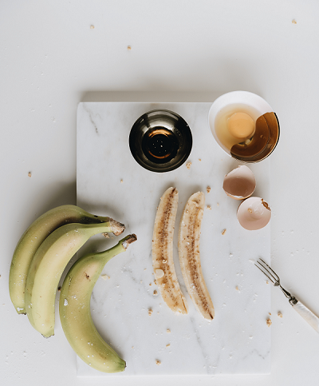
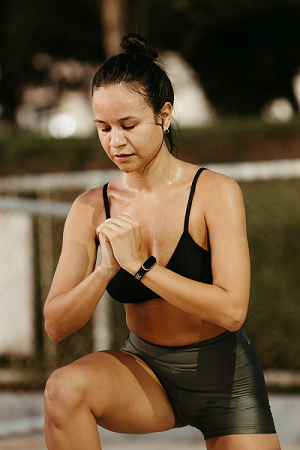

Encontre as Melhores Receitas fitness Aqui.
(Clique na imagem)
Cansado de dietas malucas ou daquelas comidas sem sabor? Suas refeições podem mudar com apenas um clique! Siga estes passos simples e volte a sentir prazer em comer com essas três receitas deliciosas. Confira!
Todos os tipos de Exercícios Aqui.
(Clique na imagem)
Após a dieta, é hora dos treinos! Abaixo, você encontrará uma variedade de exercícios, cada um deles explicado detalhadamente, seja para fazer na academia ou em casa!
Cuide também da sua saúde mental.
(Clique na imagem)
E quando você começar a ficar obcecado com a balança, é aí que sua saúde mental se torna sua maior aliada, ajudando a manter a paciência que você precisa.